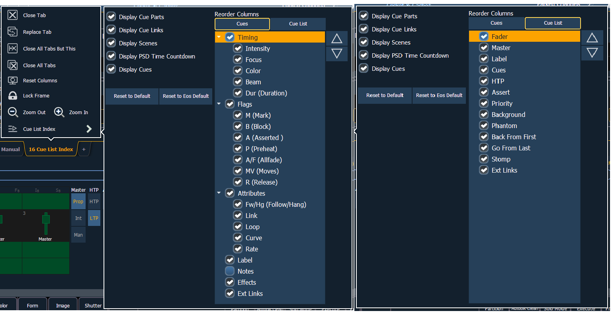

The Cue List Index has a configuration menu, which is accessed by first selecting the Cue List Index tab and then double clicking on the tab to open the menu. With the Cue List Index selected, you can also select the gear icon, which is located by the tabs, to open the configuration menu.

The following options are available in this configuration menu:
Reorder columns allows you choose what data displays in the top and bottom halves of the Cue List Index and what order it displays in. To make changes to the top half, select {Cues}. To make changes to the bottom half, select {Cue List}.
By default, all columns except notes will be displayed. The arrow keys on the right can be used to move columns around. Columns with multiple options are moved in groups. To select a column header to move, click or tap the name. The check boxes suppress or enable. When an item is enabled to display, a check mark will be in the corresponding box.
The Cue List Index takes its default settings from the Playback Status Display. The default is identified with parentheses. See Playback Status Display Configuration for more information.